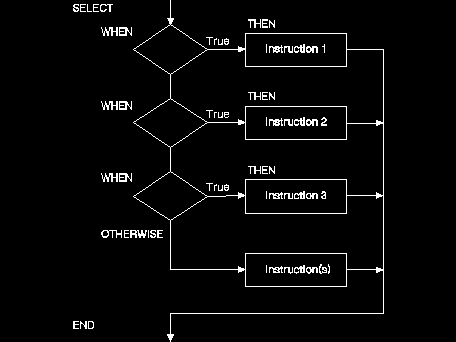

SELECT tells the interpreter to select one of a number of instructions. It is used only with WHEN, THEN, END, and sometimes, OTHERWISE. The END instruction marks the end of every SELECT group. The SELECT instruction looks like this:
SELECT
WHEN expression1
THEN instruction1
WHEN expression2
THEN instruction2
WHEN expression3
THEN instruction3
...
OTHERWISE
instruction
instruction
instruction
END
┴╓: An IF-THEN instruction cannot be used with a SELECT instruction unless it follows a WHEN or OTHERWISE instruction. You can read this format as follows:
o
This diagram shows the SELECT instruction:
A DO-END instruction could be included inside a SELECT instruction as follows:
SELECT WHEN expression1 THEN
DO
instruction1
instruction2
instruction3
END
.
.
.
You can use the SELECT instruction when you are looking at one variable that can have several different values associated with it. With each different value, you can set a different condition.
For example, suppose you wanted a reminder of weekday activities. For the variable day, you can have a value of Monday through Friday. Depending on the day of the week (the value of the variable), you can list a different activity (instruction). You could use a procedure such as the following, SELECT.CMD, which chooses from several instructions.
┴╓: A THEN or ELSE instruction must be followed by an instruction.
/* Selecting weekday activities */
SAY 'What day is it today?'
Pull day
SELECT
WHEN day = 'MONDAY'
THEN
SAY 'Model A board meeting'
WHEN day = 'TUESDAY'
THEN
SAY "My Team Meeting"
WHEN day = 'WEDNESDAY'
THEN NOP /* Nothing happens here */
WHEN day = 'THURSDAY'
THEN
SAY "My Seminar"
WHEN day = 'FRIDAY'
THEN
SAY "My Book Review"
OTHERWISE
SAY "It is the weekend, anything can happen!"
END
EXIT
NOP Instruction: If you want nothing to happen for one expression, use the NOP (No Operation) instruction, as shown in the previous example for Wednesday.